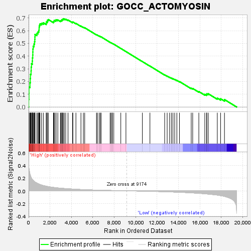
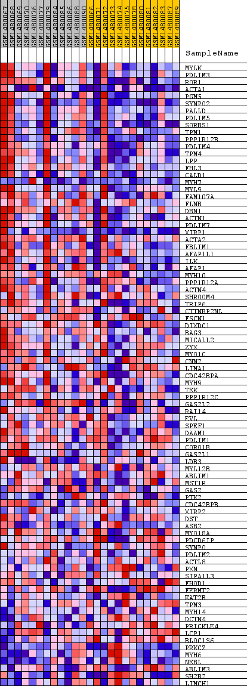
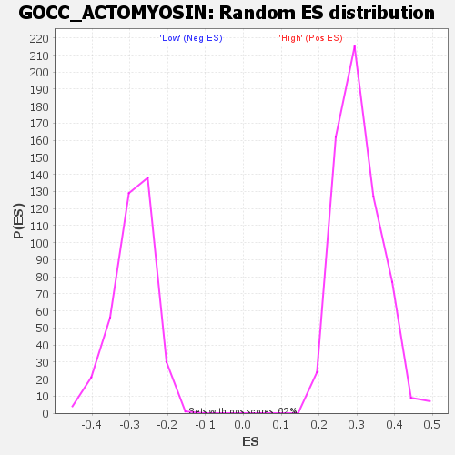

| Dataset | WG6v3.MRPL3.cls#High_versus_Low.MRPL3.cls#High_versus_Low_repos |
| Phenotype | MRPL3.cls#High_versus_Low_repos |
| Upregulated in class | High |
| GeneSet | GOCC_ACTOMYOSIN |
| Enrichment Score (ES) | 0.6922037 |
| Normalized Enrichment Score (NES) | 2.277737 |
| Nominal p-value | 0.0 |
| FDR q-value | 0.0 |
| FWER p-Value | 0.0 |

| SYMBOL | TITLE | RANK IN GENE LIST | RANK METRIC SCORE | RUNNING ES | CORE ENRICHMENT | |
|---|---|---|---|---|---|---|
| 1 | MYLK | MYLK | 8 | 0.427 | 0.0598 | Yes |
| 2 | PDLIM3 | PDLIM3 | 31 | 0.355 | 0.1086 | Yes |
| 3 | ROR1 | ROR1 | 34 | 0.348 | 0.1576 | Yes |
| 4 | ACTA1 | ACTA1 | 128 | 0.265 | 0.1901 | Yes |
| 5 | PGM5 | PGM5 | 156 | 0.247 | 0.2235 | Yes |
| 6 | SYNPO2 | SYNPO2 | 172 | 0.240 | 0.2566 | Yes |
| 7 | PALLD | PALLD | 228 | 0.216 | 0.2841 | Yes |
| 8 | PDLIM5 | PDLIM5 | 239 | 0.211 | 0.3133 | Yes |
| 9 | SORBS1 | SORBS1 | 267 | 0.200 | 0.3401 | Yes |
| 10 | TPM1 | TPM1 | 347 | 0.180 | 0.3614 | Yes |
| 11 | PPP1R12B | PPP1R12B | 356 | 0.178 | 0.3861 | Yes |
| 12 | PDLIM4 | PDLIM4 | 386 | 0.172 | 0.4089 | Yes |
| 13 | TPM4 | TPM4 | 394 | 0.170 | 0.4325 | Yes |
| 14 | LPP | LPP | 400 | 0.169 | 0.4560 | Yes |
| 15 | FHL3 | FHL3 | 426 | 0.165 | 0.4780 | Yes |
| 16 | CALD1 | CALD1 | 507 | 0.151 | 0.4951 | Yes |
| 17 | MYH7 | MYH7 | 553 | 0.144 | 0.5130 | Yes |
| 18 | MYL9 | MYL9 | 578 | 0.141 | 0.5317 | Yes |
| 19 | FAM107A | FAM107A | 588 | 0.140 | 0.5510 | Yes |
| 20 | FLNB | FLNB | 598 | 0.139 | 0.5702 | Yes |
| 21 | DBN1 | DBN1 | 770 | 0.123 | 0.5787 | Yes |
| 22 | ACTN1 | ACTN1 | 869 | 0.114 | 0.5897 | Yes |
| 23 | PDLIM7 | PDLIM7 | 947 | 0.108 | 0.6009 | Yes |
| 24 | XIRP1 | XIRP1 | 980 | 0.106 | 0.6142 | Yes |
| 25 | ACTA2 | ACTA2 | 985 | 0.106 | 0.6289 | Yes |
| 26 | FBLIM1 | FBLIM1 | 1011 | 0.103 | 0.6422 | Yes |
| 27 | AFAP1L1 | AFAP1L1 | 1063 | 0.099 | 0.6536 | Yes |
| 28 | ILK | ILK | 1212 | 0.091 | 0.6587 | Yes |
| 29 | AFAP1 | AFAP1 | 1378 | 0.083 | 0.6620 | Yes |
| 30 | MYH10 | MYH10 | 1648 | 0.073 | 0.6583 | Yes |
| 31 | PPP1R12A | PPP1R12A | 1652 | 0.072 | 0.6683 | Yes |
| 32 | ACTN4 | ACTN4 | 1749 | 0.069 | 0.6731 | Yes |
| 33 | SHROOM4 | SHROOM4 | 1755 | 0.069 | 0.6826 | Yes |
| 34 | TRIP6 | TRIP6 | 1845 | 0.066 | 0.6873 | Yes |
| 35 | CTTNBP2NL | CTTNBP2NL | 2322 | 0.054 | 0.6703 | Yes |
| 36 | FSCN1 | FSCN1 | 2369 | 0.053 | 0.6753 | Yes |
| 37 | DIXDC1 | DIXDC1 | 2400 | 0.052 | 0.6811 | Yes |
| 38 | BAG3 | BAG3 | 2544 | 0.049 | 0.6806 | Yes |
| 39 | MICALL2 | MICALL2 | 2562 | 0.049 | 0.6866 | Yes |
| 40 | ZYX | ZYX | 2727 | 0.046 | 0.6846 | Yes |
| 41 | MYO1C | MYO1C | 2978 | 0.042 | 0.6775 | Yes |
| 42 | CNN2 | CNN2 | 3036 | 0.040 | 0.6802 | Yes |
| 43 | LIMA1 | LIMA1 | 3114 | 0.040 | 0.6818 | Yes |
| 44 | CDC42BPA | CDC42BPA | 3120 | 0.039 | 0.6871 | Yes |
| 45 | MYH9 | MYH9 | 3187 | 0.039 | 0.6892 | Yes |
| 46 | TEK | TEK | 3235 | 0.038 | 0.6921 | Yes |
| 47 | PPP1R12C | PPP1R12C | 3335 | 0.037 | 0.6922 | Yes |
| 48 | GAS2L2 | GAS2L2 | 3465 | 0.035 | 0.6905 | No |
| 49 | RAI14 | RAI14 | 3681 | 0.033 | 0.6840 | No |
| 50 | EVL | EVL | 4101 | 0.028 | 0.6663 | No |
| 51 | SPEF1 | SPEF1 | 4134 | 0.028 | 0.6685 | No |
| 52 | DAAM1 | DAAM1 | 4418 | 0.025 | 0.6574 | No |
| 53 | PDLIM1 | PDLIM1 | 4886 | 0.021 | 0.6361 | No |
| 54 | CORO1B | CORO1B | 5114 | 0.019 | 0.6270 | No |
| 55 | GAS2L1 | GAS2L1 | 5239 | 0.018 | 0.6232 | No |
| 56 | LDB3 | LDB3 | 6338 | 0.011 | 0.5680 | No |
| 57 | MYL12B | MYL12B | 6425 | 0.011 | 0.5651 | No |
| 58 | ABLIM1 | ABLIM1 | 6587 | 0.010 | 0.5582 | No |
| 59 | MST1R | MST1R | 6699 | 0.010 | 0.5538 | No |
| 60 | GAS2 | GAS2 | 6766 | 0.009 | 0.5517 | No |
| 61 | PTK2 | PTK2 | 7612 | 0.006 | 0.5088 | No |
| 62 | CDC42BPB | CDC42BPB | 7695 | 0.005 | 0.5053 | No |
| 63 | XIRP2 | XIRP2 | 7796 | 0.005 | 0.5008 | No |
| 64 | DST | DST | 7821 | 0.005 | 0.5003 | No |
| 65 | ASB2 | ASB2 | 7955 | 0.004 | 0.4940 | No |
| 66 | MYO18A | MYO18A | 8609 | 0.002 | 0.4605 | No |
| 67 | PDCD6IP | PDCD6IP | 9089 | 0.000 | 0.4358 | No |
| 68 | SYNPO | SYNPO | 10623 | -0.005 | 0.3572 | No |
| 69 | PDLIM2 | PDLIM2 | 11330 | -0.008 | 0.3218 | No |
| 70 | ACTL8 | ACTL8 | 12705 | -0.014 | 0.2527 | No |
| 71 | PXN | PXN | 12939 | -0.015 | 0.2428 | No |
| 72 | SIPA1L3 | SIPA1L3 | 13166 | -0.017 | 0.2335 | No |
| 73 | FHOD1 | FHOD1 | 13333 | -0.018 | 0.2274 | No |
| 74 | FERMT2 | FERMT2 | 13478 | -0.019 | 0.2225 | No |
| 75 | KAT2B | KAT2B | 13642 | -0.020 | 0.2169 | No |
| 76 | TPM3 | TPM3 | 13844 | -0.021 | 0.2095 | No |
| 77 | MYH14 | MYH14 | 14089 | -0.023 | 0.2001 | No |
| 78 | DCTN4 | DCTN4 | 15186 | -0.032 | 0.1479 | No |
| 79 | PRICKLE4 | PRICKLE4 | 15324 | -0.033 | 0.1455 | No |
| 80 | LCP1 | LCP1 | 15896 | -0.039 | 0.1216 | No |
| 81 | BLOC1S6 | BLOC1S6 | 16455 | -0.047 | 0.0993 | No |
| 82 | PRKCZ | PRKCZ | 16619 | -0.049 | 0.0978 | No |
| 83 | MYH6 | MYH6 | 16641 | -0.050 | 0.1038 | No |
| 84 | NEBL | NEBL | 16777 | -0.052 | 0.1041 | No |
| 85 | ABLIM3 | ABLIM3 | 17621 | -0.067 | 0.0700 | No |
| 86 | SH2B2 | SH2B2 | 17929 | -0.076 | 0.0648 | No |
| 87 | LIMCH1 | LIMCH1 | 18291 | -0.088 | 0.0585 | No |

